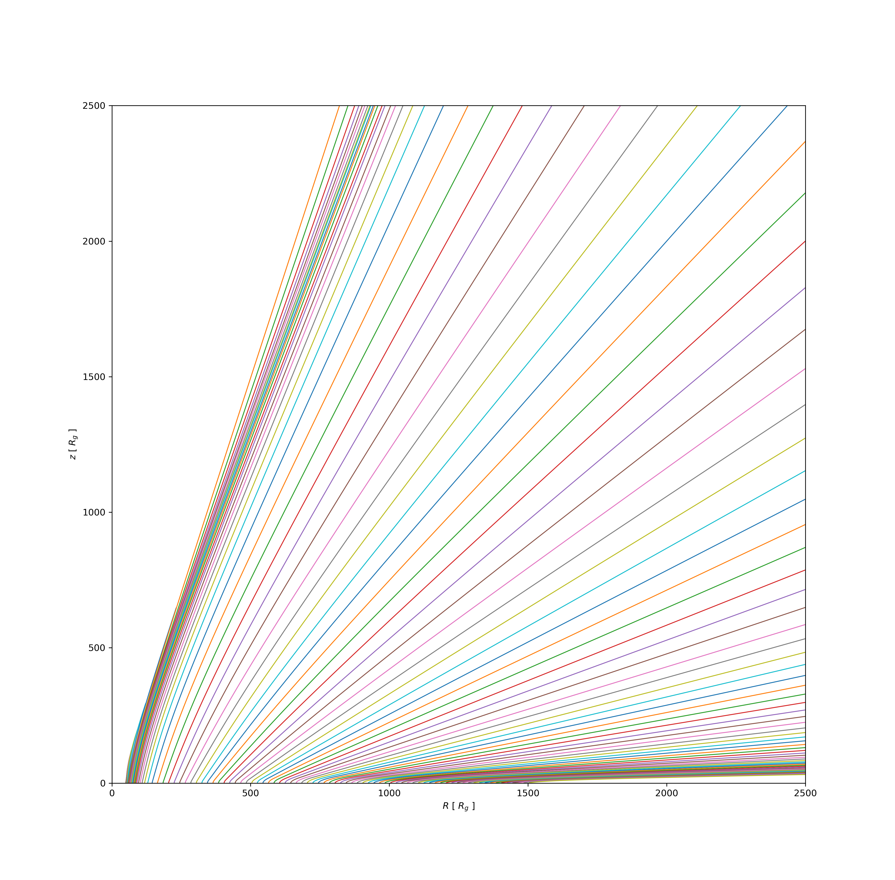
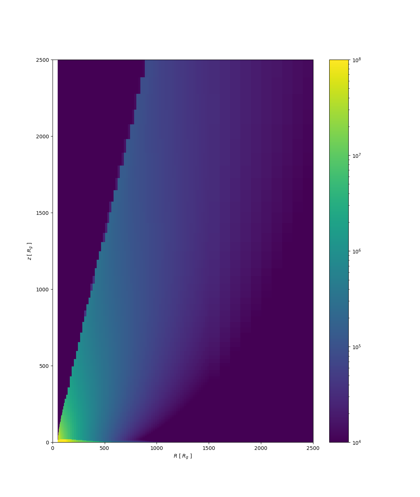
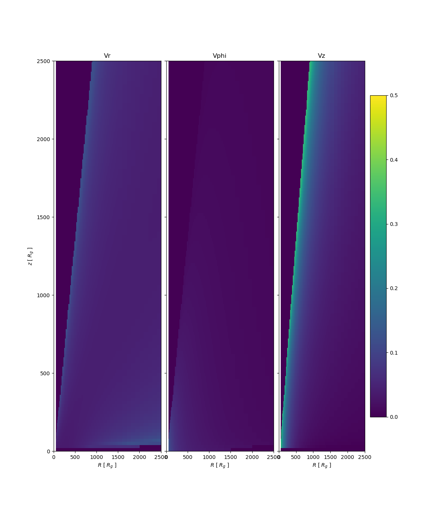

Usage
Configuration
All the parameters in the code are specified through a parameter file. An example file can be found in configs/config_example.yaml. All the parameter fields should be self explanatory when familiar with the paper release (TODO: link to arxiv)
black_hole:
M: 1e8 # solar masses
mdot: 0.5 # Eddington units
spin: 0.0 # spin parameter (-1,1)
radiation:
relativistic: true
f_uv: auto
f_x: 0.15
n_r: 1000 # number of bins in the disk
disk_r_in: 6.0
z_xray: 0.0
disk_height: 0.0
mu_nucleon: 0.61
mu_electron: 1.17
xray_opacity: boost
tau_uv_calculation: no_tau_uv
disk_integral_rtol: 1e-3
wind_interpolator:
update_grid_method: "average"
vacuum_density: 1e2
nz: 500
nr: auto
grid:
r_min: 6.0
r_max: 50000.0
z_min: 0.0
z_max: 50000.0
initial_conditions:
mode: CAKIC
r_in: 50.0
r_fi: 1500.0
n_lines: auto
log_spaced: true
z0: 0.0 # Rg
K: 0.03
alpha: 0.6
use_precalculated: true # use cached results
integrator:
n_iterations: 5
atol: 1e-8
rtol: 1e-3
save_path: "./example"Running
To run the specified parameter file, we do
using Qwind
model = Model("configs/config_example.yaml")
iterations_dict = Dict()
run!(model, iterations_dict)The iterations_dict stores information about each iteration of the density grid, so we know how the wind properties and radiation field are changing throughout iterations.
Running in parallel
The code automatically runs with all available cores to Julia. The number of cores that Julia can use can be specified as a launch flag, eg
julia -p 6will launch Julia with 6 cores. Alternatively, we can make us of the Distributed package,
using Distributed
addprocs(5)Reading the results
In the example above, the results will be stored in ./tests/results.hdf5. A series of functions are built into QWIND to facilitate reading different data of interest.
Streamlines
streamlines = Streamlines("example/results.hdf5");We can then easily plot them through
using PyPlot
fig, ax = plt.subplots()
for sl in sls
ax.plot(sl.r, sl.z, linewidth=1)
end
ax.set_xlim(0,2500)
ax.set_ylim(0,2500)
ax.set_xlabel(L"$R$ [ $R_g$ ]")
ax.set_ylabel(L"$z$ [ $R_g$ ]")
By default, the streamlines of the latest iteration will be loaded. A specific iteration can be checked with
streamlines = Streamlines("example/results.hdf5", 2)Density Grid
Similarly,
dgrid = DensityGrid("./example/results.hdf5");
LogNorm = matplotlib.colors.LogNorm
fig, ax = plt.subplots()
cm = ax.pcolormesh(dgrid.r_range, dgrid.z_range, dgrid.grid', norm=LogNorm(1e4, 1e8))
plt.colorbar(cm, ax=ax)
ax.set_xlim(0,2500)
ax.set_ylim(0,2500)
ax.set_xlabel(L"$R$ [ $R_g$ ]")
ax.set_ylabel(L"$z$ [ $R_g$ ]")
Velocity Grid
Normalize = matplotlib.colors.Normalize
fig, ax = plt.subplots(1, 3, figsize=(6,2), sharex=true, sharey=true)
ax[1].pcolormesh(vgrid.r_range, vgrid.z_range, vgrid.vr_grid', norm=Normalize(0, 0.5))
ax[2].pcolormesh(vgrid.r_range, vgrid.z_range, vgrid.vphi_grid', norm=Normalize(0, 0.5))
cm = ax[3].pcolormesh(vgrid.r_range, vgrid.z_range, vgrid.vz_grid', norm=Normalize(0, 0.5))
plt.colorbar(cm, ax=ax[3])
ax[1].set_ylim(0,2500)
ax[1].set_xlim(0,2500)
for i in 1:3
ax[i].set_xlabel(L"$R$ [ $R_g$ ]")
end
ax[1].set_ylabel(L"$z$ [ $R_g$ ]")
ax[1].set_title("Vr")
ax[2].set_title("Vphi")
ax[3].set_title("Vz")
plt.subplots_adjust(wspace=0.05, hspace=0.05)